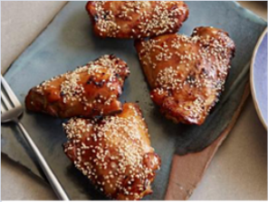
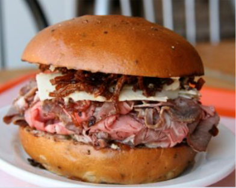
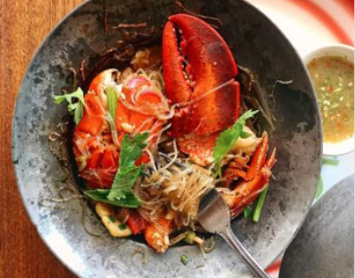

Everyday Categories
Everyday human food has developed recipes with GMO's out of the mind. These delicious dishes featured on this site call for simple ingredients that you already have in your pantry or can easily find at local grocery stores, evicted neigbors house, and farmers' markets.
-

Breakfast is Very Important
-

Vegetarian Suggestions
-

All-Weather Weeknight Dinners
Healthy Recipes of the Week
This weeks top award winners to critically-acclaimed recipe gems, check out these original recipes from home cook and professional chefs around the country.
-

Fajita-Stuffed Peppers
-

Ree's Breakfast Muffins
-

Eggplant Parmesan
-

Teriyaki Chicken Thighs
Where to Eat
Where to Eat This is not the aspirational fluff of Instagram wall neon; it's fact. Recent surveys have shown that
a majority of travelers consider food first when planning a trip, even ahead of where they sleep. Add to this that
people are also traveling more than ever before - earthlings logged a record-breaking 1.4 billion international
trips last year is more ravenous than ever. and it's safe to say that the hunger for new culinary experiences
While the endlessly alluring bistros of Paris, izakayas of Tokyo, shawarma stands of Tel Aviv, and tasting
menus of Mexico City will always top many people's lists of cravings, we're continually on the lookout
for something new to fill our bellies, our passports, and our feeds.
-

Best Sandwiches in America
-

50 States of Pizza Slices
-

City Guides